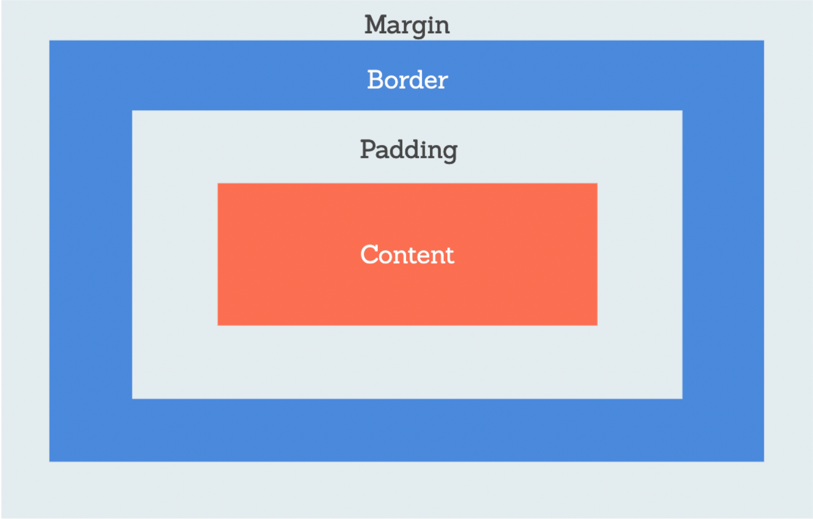

Prework Study Guide

HTML
- HTML is a markup language. Elements are wrapped between tags.
- The head element contains metadata about the webpage.
- The body element represents the visible content shown to the user
- The headers are ordered like
h1 or h2, etc.
- Tags are contained within angled brackets, and a forward slash is used to close an element tag:
<> and /.
- Most body text is wrapped with
<p>text here</p>
- Nesting elements within one another is possible, such as using bold text within this unordered list.
- Inserting a hyperlink is done like this:
<a href="link">"display text"</a>.
- Use
& with lt; to create a < or gt; to create a >.
- Here is a list of HTML formatting tags.
CSS

- When using an external style sheet, you link the file using a
<link> element placed in the HTML's <head> element.
- The
* symbol defines a wildcard element, and can be used to apply styles to all elements in the HTML page.
- You have to link a CSS file to the HTML file for the styles to take effect, and you do this by adding a line in the
<head> section of the HTML file. After the final <meta> element and before the <title> element. The code is: <link rel="stylesheet" href="CSS file directory">
- Here is a list of CSS formatting styles.
Git
- The first step in creating a local development version is to create a feature branch, which you do by using the following command:
git checkout -b branch-name: creates a new branch and switches to it. When working in a local development environment, this new branch only exists on your local machine (which is why you run git push origin "branch name" later to create a new branch in GitHub too).git status: checks what branch we are currently on. You should not make changes on the "main" branch of the repository, especially when working collaboratively.cd navigates through repositories, and ls lists all folders/files in the repository.code . opens the current repo in VS Code- A list of Git commands can be found here.
- Once you've edited a file in VS Code, you need to push the changes to a feature branch in Git, and then merge that branch with the main to ensure all changes are kept up to date, i.e. complete the Git flow. This page of the prework summarises how to do that.
- This command:
git add -A> adds modifications you made in VS code to the current working branch. The -A flag indicates that we want to add all changes.
- Next you run
git commit -m "message" which commits your changes to the active branch with a message
- Before you push these changes to your repo, you should double-check if the local branch you're working on right now is in sync with the base branch in GitHub with this command:
git pull origin "branch"
- Finally you push the changes to the GitHub branch (from your local branch) with:
git push origin "branch name".
- Over on GitHub, navigate to the repository, check the "Pull requests" tab and then create a "New pull request.
- Make sure the base branch is your main one, and the comparison branch is the new branch you just created.
- Then, create the pull request and (if working collaboratively, wait for reviews, then) merge the comparison branch into the base branch.
- Close any issues, if applicable.
- Finally, don't forget to update your local
main branch with git checkout main.
Javascript
- Enter your Javascript notes here.